Using Tidy Data with Bayesian Samplers
Matthew Kay
2017-09-02
Introduction
This vignette introduces the tidybayes package, which facilitates the use of tidy data (one observation per row) with Bayesian samplers in R. This vignette is geared towards working with tidy data in general-purpose samplers like JAGS or Stan. For a similar introduction to the use of tidybayes with high-level modelling functions such as those in brms or rstanarm, see also vignette(“tidy-rstanarm”).
The default output (and sometimes input) data formats of popular samplers like JAGS and Stan often don’t quite conform to the ideal of tidy data. For example, input formats might expect a list instead of a data frame, and for all variables to be encoded as numeric values (requiring translation of factors to numeric values and the creation of index variables to store the number of levels per factor or the number of observations in a data frame). Output formats will often be in matrix form (requiring conversion for use with libraries like ggplot), and will use numeric indices (requiring conversion back into factor level names if the you wish to make meaningfully-labelled plots or estimates). tidybayes automates all of these sorts of tasks.
Philosophy
There are a few core ideas that run through the tidybayes API that should (hopefully) make it easy to use:
Tidy data does not always mean all parameter names as values. In contrast to the
ggmcmclibrary (which translates sampler results into a data frame with aParameterandvaluecolumn), thespread_samplesfunction intidybayesproduces in data frames where the columns are named after parameters and (in some cases) indices of those parameters, as automatically as possible and using a syntax as close to the same way you would refer to those variables in the sampler’s language as possible. A similar function toggmcmc’s approach is also provided ingather_samples, since sometimes you do want parameter names as values in a column. The goal is fortidybayesto do the tedious work of figuring out how to make a data frame look the way you need it to, including turning parameters with indices like"b[1,2]"and the like into tidy data for you.Fit into the tidyverse and broom.
tidybayesmethods fit into a workflow familiar to users of thetidyverse(dplyr,tidyr,ggplot2, etc), and thetidyfunction from thebroompackage, which means fitting into the pipe (%>%) workflow, using and respecting grouped data frames (thusspread_samplesandgather_samplesreturn results already grouped by parameter indices, and methods likemean_qicalculate estimates and intervals for parameters and groups simultaneously), using the same output column names that thebroom::tidyfunction does where possible, and not reinventing too much of the wheel if it is already made easy by functions provided by existingtidyversepackages (unless it makes for much clearer code for a common idiom).Focus on composable operations and plotting primitives, not monolithic plots and operations. Several other packages (notably
bayesplotandggmcmc) already provide an excellent variety of pre-made methods for plotting Bayesian results.tidybayesshies away from duplicating this functionality. Instead, it focuses on providing composable operations for generating and manipulating Bayesian samples in a tidy data format, and graphical primitives forggplotthat allow you to build custom plots easily. Most simply, wherebayesplotandggmcmctend to have functions with many options that return a full ggplot object,tidybayestends towards providing primitives (likegeoms) that you can compose and combine into your own custom plots. I believe both approaches have their place.Sensible defaults make life easy. But options (and the data being tidy in the first place) make it easy to go your own way when you need to.
Variable names in models should be descriptive, not cryptic. This principle implies avoiding cryptic (and short) subscripts in favor of longer (but descriptive) ones. This is a matter of readability and accessibility of models to others. For example, a common pattern amongst Stan users (and in the Stan manual) is to use variables like
Jto refer to the number of elements in a group (e.g., number of participants) and a corresponding index likejto refer to specific elements in that group. I believe this sacrifices too much readability for the sake of concision; I prefer a pattern liken_participantfor the size of the group andparticipant(or a mnemonic shortform likep) for specific elements. In functions where names are auto-generated (likecompose_data),tidybayeswill (by default) assume you want these sorts of more descriptive names; however, you can always override the default naming scheme.
Supported model types
tidybayes aims to support a variety of models. Currently supported models include rstan, coda::mcmc and coda::mcmc.list, runjags, rstanarm, brms, MCMCglmm, and anything with its own as.mcmc.list implementation. If you install the tidybayes.rethinking package, models from the rethinking package are also supported.
Setup
The following libraries are required to run this vignette:
library(magrittr)
library(dplyr)
library(forcats)
library(ggplot2)
library(ggstance)
library(lsmeans)
library(broom)
library(rstan)
library(bayesplot)
library(tidybayes)These options help Stan run faster:
rstan_options(auto_write = TRUE)
options(mc.cores = parallel::detectCores())Example dataset
To demonstrate tidybayes, we will use a simple dataset with 10 observations from 5 conditions each:
set.seed(5)
n = 10
n_condition = 5
ABC =
data_frame(
condition = rep(c("A","B","C","D","E"), n),
response = rnorm(n * 5, c(0,1,2,1,-1), 0.5)
)A snapshot of the data looks like this:
head(ABC, 10)## # A tibble: 10 x 2
## condition response
## <chr> <dbl>
## 1 A -0.4204277
## 2 B 1.6921797
## 3 C 1.3722541
## 4 D 1.0350714
## 5 E -0.1442796
## 6 A -0.3014540
## 7 B 0.7639168
## 8 C 1.6823143
## 9 D 0.8571132
## 10 E -0.9309459(10 rows of 50)
This is a typical tidy format data frame: one observation per row. Graphically:
ABC %>%
ggplot(aes(x = response, y = fct_rev(condition))) +
geom_point(alpha = 0.5) +
ylab("condition")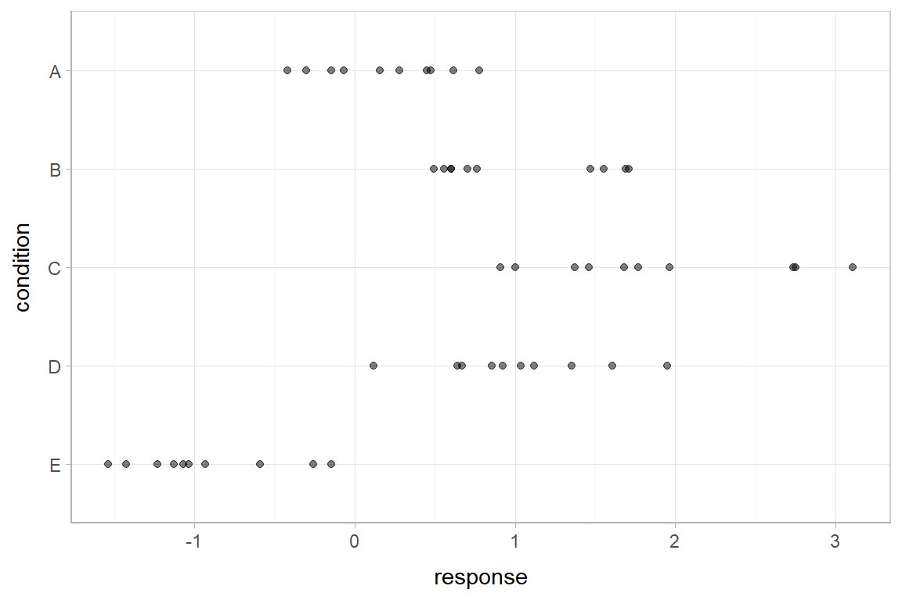
Using compose_data to prepare a data frame for the sampler
Shunting data from a data frame into a format usable in samplers like JAGS or Stan can involve a tedious set of operations, like generating index variables storing the number of operations or the number of levels in a factor. compose_data automates these operations.
A hierarchical model of our example data might estimate an overall mean across the conditions (overall_mean), the standard deviation of the condition means (condition_mean_sd), the mean within each condition (condition_mean[condition]) and the standard deviation of the responses given a condition mean (response_sd):
data {
int<lower=1> n;
int<lower=1> n_condition;
int<lower=1, upper=n_condition> condition[n];
real response[n];
}
parameters {
real overall_mean;
vector[n_condition] condition_zoffset;
real<lower=0> response_sd;
real<lower=0> condition_mean_sd;
}
transformed parameters {
vector[n_condition] condition_mean;
condition_mean = overall_mean + condition_zoffset * condition_mean_sd;
}
model {
response_sd ~ cauchy(0, 1); # => half-cauchy(0, 1)
condition_mean_sd ~ cauchy(0, 1); # => half-cauchy(0, 1)
overall_mean ~ normal(0, 5);
condition_zoffset ~ normal(0, 1); # => condition_mean ~ normal(overall_mean, condition_mean_sd)
for (i in 1:n) {
response[i] ~ normal(condition_mean[condition[i]], response_sd);
}
}We have compiled and loaded this model into the variable ABC_stan.
This model expects these variables as input:
-
n: number of observations -
n_condition: number of conditions -
condition: a vector of integers indicating the condition of each observation -
response: a vector of observations
Our data frame (ABC) only has response and condition, and condition is in the wrong format (it is a factor instead of numeric). However, compose_data can generate a list containing the above variables in the correct format automatically. It recognizes that condition is a factor and converts it to a numeric, adds the n_condition variable automatically containing the number of levels in condition, and adds the n column containing the number of observations (number of rows in the data frame):
compose_data(ABC)## $condition
## [1] 1 2 3 4 5 1 2 3 4 5 1 2 3 4 5 1 2 3 4 5 1 2 3 4 5 1 2 3 4 5 1 2 3 4 5 1 2 3 4 5 1 2 3 4 5 1 2 3
## [49] 4 5
##
## $n_condition
## [1] 5
##
## $response
## [1] -0.42042774 1.69217967 1.37225407 1.03507138 -0.14427956 -0.30145399 0.76391681 1.68231434
## [9] 0.85711318 -0.93094589 0.61381517 0.59911027 1.45980370 0.92123282 -1.53588002 -0.06949307
## [17] 0.70134345 0.90801662 1.12040863 -1.12967770 0.45025597 1.47093470 2.73398095 1.35338054
## [25] -0.59049553 -0.14674092 1.70929454 2.74938691 0.67145895 -1.42639772 0.15795752 1.55484708
## [33] 3.10773029 1.60855182 -0.26038911 0.47578692 0.49523368 0.99976363 0.11890706 -1.07130406
## [41] 0.77503018 0.59878841 1.96271054 1.94783398 -1.22828447 0.28111168 0.55649574 1.76987771
## [49] 0.63783576 -1.03460558
##
## $n
## [1] 50This makes it easy to skip right to running the model without munging the data yourself:
m = sampling(ABC_stan, data = compose_data(ABC), control = list(adapt_delta=0.99))The results look like this:
print(m, pars = c("overall_mean", "condition_mean_sd", "condition_mean", "response_sd"))## Inference for Stan model: 44b17ba377766bcfe26d33029c738091.
## 4 chains, each with iter=2000; warmup=1000; thin=1;
## post-warmup draws per chain=1000, total post-warmup draws=4000.
##
## mean se_mean sd 2.5% 25% 50% 75% 97.5% n_eff Rhat
## overall_mean 0.63 0.02 0.60 -0.59 0.30 0.63 0.95 1.87 711 1
## condition_mean_sd 1.22 0.02 0.50 0.61 0.89 1.11 1.42 2.55 802 1
## condition_mean[1] 0.20 0.00 0.18 -0.14 0.07 0.19 0.32 0.55 4000 1
## condition_mean[2] 1.01 0.00 0.18 0.65 0.89 1.01 1.13 1.36 4000 1
## condition_mean[3] 1.84 0.00 0.17 1.50 1.73 1.84 1.96 2.18 4000 1
## condition_mean[4] 1.02 0.00 0.17 0.67 0.90 1.01 1.13 1.35 4000 1
## condition_mean[5] -0.89 0.00 0.17 -1.23 -1.01 -0.89 -0.78 -0.54 4000 1
## response_sd 0.56 0.00 0.06 0.46 0.52 0.55 0.60 0.70 1556 1
##
## Samples were drawn using NUTS(diag_e) at Sat Sep 02 23:08:18 2017.
## For each parameter, n_eff is a crude measure of effective sample size,
## and Rhat is the potential scale reduction factor on split chains (at
## convergence, Rhat=1).
Extracting samples from a fit in tidy-format using spread_samples
Extracting parameter indices into a separate column in a tidy format data frame
Now that we have our results, the fun begins: getting the samples out in a tidy format! The default methods in Stan for extracting samples from the data do so in a nested format:
str(extract(m))## List of 6
## $ overall_mean : num [1:4000(1d)] 0.65 0.0485 0.681 0.2011 1.0622 ...
## ..- attr(*, "dimnames")=List of 1
## .. ..$ iterations: NULL
## $ condition_zoffset: num [1:4000, 1:5] -0.3117 0.0809 -0.709 -0.0229 -0.9112 ...
## ..- attr(*, "dimnames")=List of 2
## .. ..$ iterations: NULL
## .. ..$ : NULL
## $ response_sd : num [1:4000(1d)] 0.571 0.529 0.696 0.511 0.535 ...
## ..- attr(*, "dimnames")=List of 1
## .. ..$ iterations: NULL
## $ condition_mean_sd: num [1:4000(1d)] 0.877 1.299 0.668 0.995 0.998 ...
## ..- attr(*, "dimnames")=List of 1
## .. ..$ iterations: NULL
## $ condition_mean : num [1:4000, 1:5] 0.377 0.154 0.208 0.178 0.153 ...
## ..- attr(*, "dimnames")=List of 2
## .. ..$ iterations: NULL
## .. ..$ : NULL
## $ lp__ : num [1:4000(1d)] 1.25 1.86 -11.87 -1.25 -1 ...
## ..- attr(*, "dimnames")=List of 1
## .. ..$ iterations: NULLThere are also methods for extracting samples as matrices or data frames in stan (and other model types, such as JAGS and MCMCglmm, have their own formats).
The spread_samples method yields a common format for all model types supported by tidybayes. It lets us instead extract samples into a data frame in tidy format, with a .chain and .iteration column storing the chain and iteration for each row, and the remaining columns corresponding to parameters or parameter indices. The spread_samples method accepts any number of column specifications, which can include names for parameters and names for parameter indices. For example, we can extract the condition_mean parameter as a tidy data frame, and put the value of its first (and only) index into the condition column, using a syntax that directly echoes how we would specify indices of the condition_mean parameter in the model itself:
m %>%
spread_samples(condition_mean[condition]) %>%
head(10)## # A tibble: 10 x 4
## # Groups: condition [5]
## .chain .iteration condition condition_mean
## <int> <int> <int> <dbl>
## 1 1 1 1 -0.1206604
## 2 1 1 2 1.0043807
## 3 1 1 3 1.5011137
## 4 1 1 4 1.1089315
## 5 1 1 5 -1.1163084
## 6 1 2 1 0.2778306
## 7 1 2 2 0.7552125
## 8 1 2 3 1.8340128
## 9 1 2 4 0.7040865
## 10 1 2 5 -1.1510277(10 rows of 50)
Automatically converting columns and indices back into their original data types
As-is, the resulting parameters don’t know anything about where their indices came from. The index of the condition_mean parameter was originally derived from the condition factor in the ABC data frame. But Stan doesn’t know this: it is just a numeric index to Stan, so the condition column just contains numbers (1, 2, 3, 4, 5) instead of the factor levels these numbers correspond to ("A", "B", "C", "D", "E").
We can recover this missing type information by passing the model through recover_types before using spread_samples. In itself recover_types just returns a copy of the model, with some additional attributes that store the type information from the data frame (or other objects) that you pass to it. This doesn’t have any useful effect by itself, but functions like spread_samples use this information to convert any column or index back into the data type of the column with the same name in the original data frame. In this example, spread_samples recognizes that the condition column was a factor with five levels ("A", "B", "C", "D", "E") in the original data frame, and automatically converts it back into a factor:
m %>%
recover_types(ABC) %>%
spread_samples(condition_mean[condition]) %>%
head(10)## # A tibble: 10 x 4
## # Groups: condition [5]
## .chain .iteration condition condition_mean
## <int> <int> <fctr> <dbl>
## 1 1 1 A -0.1206604
## 2 1 1 B 1.0043807
## 3 1 1 C 1.5011137
## 4 1 1 D 1.1089315
## 5 1 1 E -1.1163084
## 6 1 2 A 0.2778306
## 7 1 2 B 0.7552125
## 8 1 2 C 1.8340128
## 9 1 2 D 0.7040865
## 10 1 2 E -1.1510277(10 rows of 20000)
Because we often want to make multiple separate calls to spread_samples, it is often convenient to decorate the original model using recover_types immediately after it has been fit, so we only have to call it once:
m %<>% recover_types(ABC)Now we can omit the recover_types call before subsequent calls to spread_samples.
Point estimates and intervals with the point_interval functions: [mean|median|mode]_[qi|hdi]
With simple parameters, wide format
tidybayes provides a family of functions for generating point estimates and intervals from samples in a tidy format. These functions follow the naming scheme [mean|median|mode]_[qi|hdi], for example, mean_qi, median_qi, mode_hdi, and so on. The first name (before the _) indicates the type of point estimate, and the second name indicates the type of interval. qi yields a quantile interval (a.k.a. equi-tailed interval, central interval, or percentile interval) and hdi yields a highest density interval. Custom estimates or intervals can also be applied using the point_interval function.
For example, we might extract the samples corresponding to the overall mean and standard deviation of observations:
m %>%
spread_samples(overall_mean, response_sd) %>%
head(10)## # A tibble: 10 x 4
## .chain .iteration overall_mean response_sd
## <int> <int> <dbl> <dbl>
## 1 1 1 0.63855299 0.6131074
## 2 1 2 0.42731110 0.4997878
## 3 1 3 0.42759837 0.4952302
## 4 1 4 0.31554502 0.5141924
## 5 1 5 0.55830932 0.6077481
## 6 1 6 0.46840728 0.5952533
## 7 1 7 0.15342895 0.5700483
## 8 1 8 0.39314982 0.6358648
## 9 1 9 0.35704260 0.5837217
## 10 1 10 0.06237028 0.4664373(10 rows of 4000)
Like with condition_mean[condition], this gives us a tidy data frame. If we want the mean and 95% quantile interval of the parameters, we can apply mean_qi:
m %>%
spread_samples(overall_mean, response_sd) %>%
mean_qi(overall_mean, response_sd)## # A tibble: 1 x 7
## overall_mean overall_mean.low overall_mean.high response_sd response_sd.low response_sd.high
## <dbl> <dbl> <dbl> <dbl> <dbl> <dbl>
## 1 0.6320543 -0.5883171 1.871653 0.5604218 0.4564225 0.7003814
## # ... with 1 more variables: .prob <dbl>mean_qi summarizes each input column using its mean. If there are multiple columns to summarise, each gets its own x.high and x.low column (for each column x) corresponding to the bounds of the .prob% interval. If there is only one column, the names conf.low and conf.high are used for the interval bounds; this is for compatibility with broom::tidy.
We can specify the columns we want to get means and intervals from, as above, or if we omit the list of columns, mean_qi will use every column that is not a grouping column or a special column (one that starts with ., like .chain or .iteration). Thus in the above example, overall_mean and response_sd are redundant arguments to mean_qi because they are also the only columns we gathered from the model. So we can simplify the previous code to the following:
m %>%
spread_samples(overall_mean, response_sd) %>%
mean_qi()## # A tibble: 1 x 7
## overall_mean overall_mean.low overall_mean.high response_sd response_sd.low response_sd.high
## <dbl> <dbl> <dbl> <dbl> <dbl> <dbl>
## 1 0.6320543 -0.5883171 1.871653 0.5604218 0.4564225 0.7003814
## # ... with 1 more variables: .prob <dbl>With indexed parameters
When we have a parameter with one or more indices, such as condition_mean, we can apply mean_qi (or other functions in the point_estimate family) as we did before:
m %>%
spread_samples(condition_mean[condition]) %>%
mean_qi()## # A tibble: 5 x 5
## # Groups: condition [5]
## condition condition_mean conf.low conf.high .prob
## <fctr> <dbl> <dbl> <dbl> <dbl>
## 1 A 0.1968434 -0.1427452 0.5482592 0.95
## 2 B 1.0075166 0.6539753 1.3588999 0.95
## 3 C 1.8420086 1.4953866 2.1836275 0.95
## 4 D 1.0153748 0.6710544 1.3494475 0.95
## 5 E -0.8916102 -1.2320089 -0.5412994 0.95How did mean_qi know what to aggregate? Data frames returned by spread_samples are automatically grouped by all index variables you pass to it; in this case, that means it groups by condition. mean_qi respects groups, and calculates the estimates and intervals within all groups. Then, because no columns were passed to mean_qi, it acts on the only non-special (.-prefixed) and non-group column, condition_mean. So the above shortened syntax is equivalent to this more verbose call:
m %>%
spread_samples(condition_mean[condition]) %>%
group_by(condition) %>% # this line not necessary (done automatically by spread_samples)
mean_qi(condition_mean)## # A tibble: 5 x 5
## # Groups: condition [5]
## condition condition_mean conf.low conf.high .prob
## <fctr> <dbl> <dbl> <dbl> <dbl>
## 1 A 0.1968434 -0.1427452 0.5482592 0.95
## 2 B 1.0075166 0.6539753 1.3588999 0.95
## 3 C 1.8420086 1.4953866 2.1836275 0.95
## 4 D 1.0153748 0.6710544 1.3494475 0.95
## 5 E -0.8916102 -1.2320089 -0.5412994 0.95When given only a single column, mean_qi will use the names conf.low and conf.high for the lower and upper ends of the intervals, in order to be consistent with broom::tidy.
Plotting point estimates and intervals
Using geom_pointinterval/geom_pointintervalh
Plotting means and intervals is straightforward using the pointinterval geom (or its horizontal version, pointintervalh), which are a modified versions of ggplot2::geom_pointrange and ggstance::geom_pointrangeh with sensible defaults for multiple intervals (functionality we will use later):
m %>%
spread_samples(condition_mean[condition]) %>%
mean_qi() %>%
ggplot(aes(y = fct_rev(condition), x = condition_mean, xmin = conf.low, xmax = conf.high)) +
geom_pointintervalh()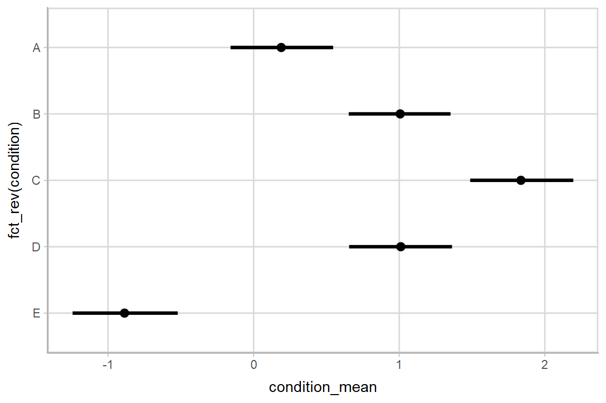
geom_pointintervalh includes xmin = conf.low and xmax = conf.high in its default aesthetics, so these can be omitted:
m %>%
spread_samples(condition_mean[condition]) %>%
mean_qi() %>%
ggplot(aes(y = fct_rev(condition), x = condition_mean)) +
geom_pointintervalh()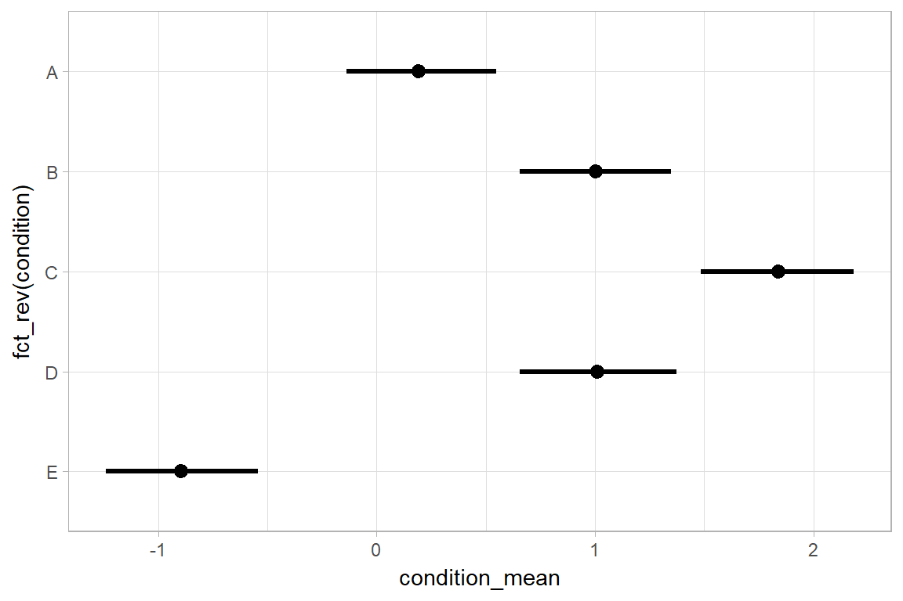
Using stat_pointinterval/stat_pointintervalh
Rather than summarizing the posterior before calling ggplot, we could also use stat_pointinterval / stat_pointintervalh to perform the summary within ggplot.
m %>%
spread_samples(condition_mean[condition]) %>%
ggplot(aes(y = fct_rev(condition), x = condition_mean)) +
stat_pointintervalh()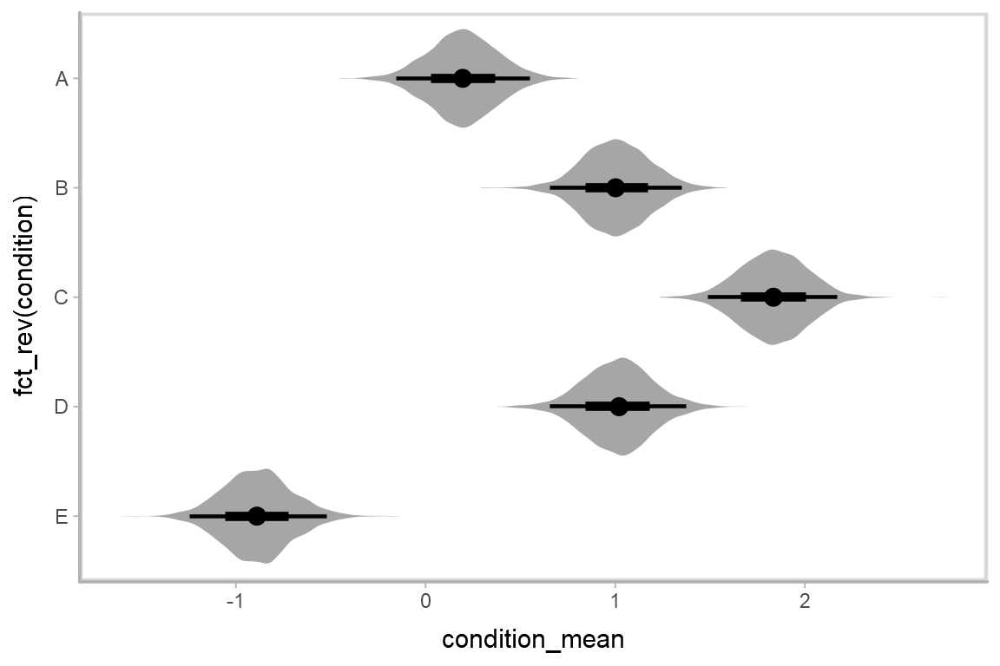
A note on functions ending in h
tidybayes follows the naming convention established by ggstance for horizontal versions of geoms and summary functions. It includes horizontal versions of all point_interval functions, which differ only in their behavior when passed a vector instead of a data frame. These functions have the same name as their vertical counterparts, but end with h. When calling stat_pointintervalh (the horizontal version of stat_pointinterval), we must use the horizontal versions of the point_interval functions, like mean_qih in the above example. This is because mean_qi returns a data frame with y, ymin, and ymax columns when passed a vector (making it suitable for stat_pointinterval or stat_summary), and mean_qih returns a data frame with x, xmin, and xmax columns when passed a vector (making it suitable for stat_pointintervalh or stat_summaryh).
Interval estimates with posterior violins (“eye plots”): geom_eye and geom_eyeh
The stat_summary approach to generating intervals makes it easy to add violin plots of posterior densities to the plot using geom_violin/geom_violinh, forming “eye plots”:
m %>%
spread_samples(condition_mean[condition]) %>%
ggplot(aes(y = fct_rev(condition), x = condition_mean)) +
geom_violinh(color = NA, fill = "gray65") +
stat_pointintervalh(.prob = c(.95, .66))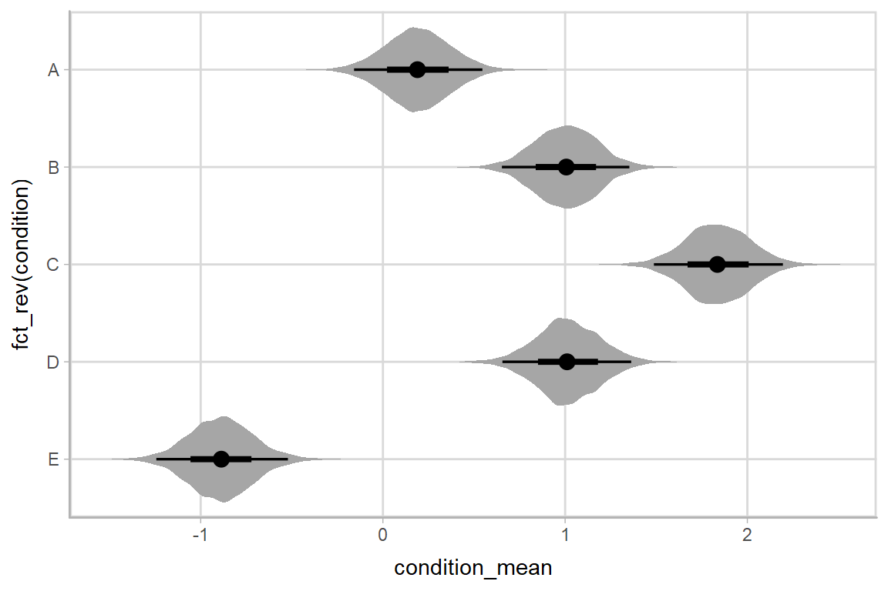
The geom_eye and geom_eyeh geoms provide a shortcut to generating eye plots with some sensible defaults:
m %>%
spread_samples(condition_mean[condition]) %>%
ggplot(aes(y = fct_rev(condition), x = condition_mean)) +
geom_eyeh()
Interval estimates with posterior densities (“half-eye plots”): geom_halfeyeh
If you prefer densities over violins, you can use geom_halfeyeh (the vertical version, not yet available, will be called geom_helfeye). This example also demonstrates how to change the interval probability (here, to 99% and 80% intervals):
m %>%
spread_samples(condition_mean[condition]) %>%
ggplot(aes(y = fct_rev(condition), x = condition_mean)) +
geom_halfeyeh(.prob = c(.99, .8))## Picking joint bandwidth of 0.0299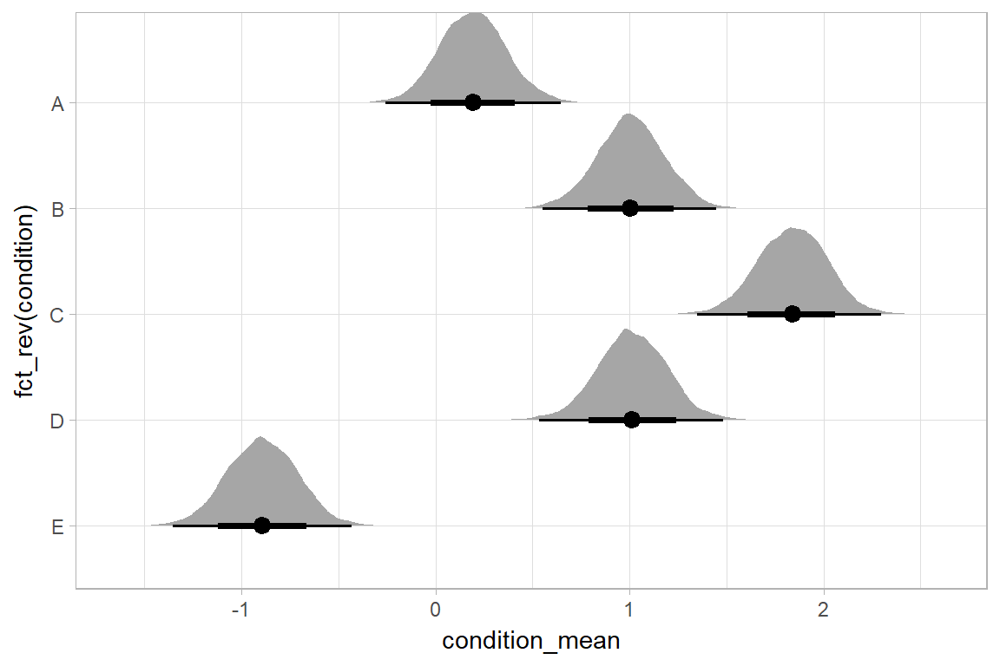
Interval estimates with multiple probability levels: the .prob = argument
mean_qi and its sister functions can also produce an arbitrary number of probability intervals by setting the .prob = argument:
m %>%
spread_samples(condition_mean[condition]) %>%
mean_qi(.prob = c(.95, .8, .5))## # A tibble: 15 x 5
## # Groups: condition [5]
## condition condition_mean conf.low conf.high .prob
## <fctr> <dbl> <dbl> <dbl> <dbl>
## 1 A 0.1968434 -0.14274518 0.5482592 0.95
## 2 B 1.0075166 0.65397534 1.3588999 0.95
## 3 C 1.8420086 1.49538661 2.1836275 0.95
## 4 D 1.0153748 0.67105436 1.3494475 0.95
## 5 E -0.8916102 -1.23200892 -0.5412994 0.95
## 6 A 0.1968434 -0.02896205 0.4177082 0.80
## 7 B 1.0075166 0.77510375 1.2347113 0.80
## 8 C 1.8420086 1.61642127 2.0618474 0.80
## 9 D 1.0153748 0.78861519 1.2339063 0.80
## 10 E -0.8916102 -1.11402596 -0.6706172 0.80
## 11 A 0.1968434 0.07490414 0.3193789 0.50
## 12 B 1.0075166 0.88715510 1.1293794 0.50
## 13 C 1.8420086 1.72618744 1.9597754 0.50
## 14 D 1.0153748 0.90324205 1.1328620 0.50
## 15 E -0.8916102 -1.00632413 -0.7764359 0.50The results are in a tidy format: one row per index (condition) and probability level (.prob). This facilitates plotting. For example, assigning -.prob to the size aesthetic will show all intervals, making thicker lines correspond to smaller intervals:
m %>%
spread_samples(condition_mean[condition]) %>%
mean_qi(.prob = c(.95, .66)) %>%
ggplot(aes(y = fct_rev(condition), x = condition_mean,
size = -.prob)) + # smaller probability interval => thicker line
geom_pointintervalh()Just as geom_pointrangeh includes xmin = conf.low and xmax = conf.high as default aesthetics, it also includes size = -.prob to facilitate exactly this usage. This, the above can be simplified to:
m %>%
spread_samples(condition_mean[condition]) %>%
mean_qi(.prob = c(.95, .66)) %>%
ggplot(aes(y = fct_rev(condition), x = condition_mean)) +
geom_pointintervalh()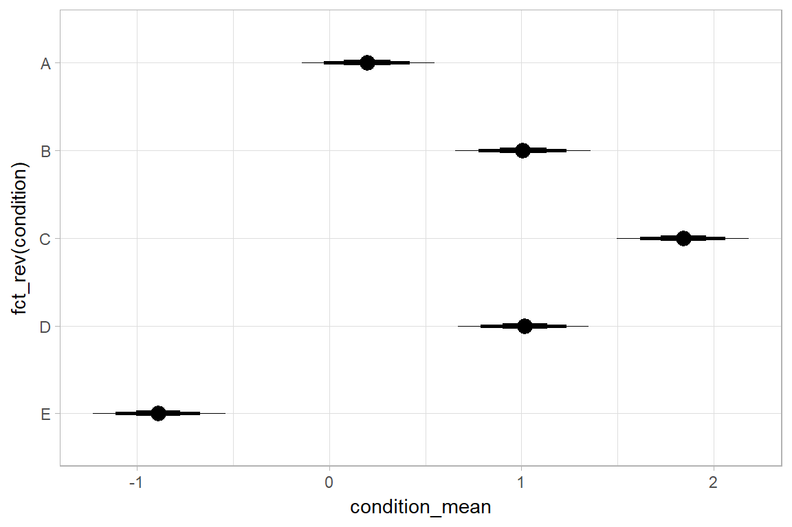
Just as the point_interval functions can generate an arbitrary number of intervals per estimate, so too can geom_pointrangeh draw an arbitrary number of intervals, though in most cases this starts to get pretty silly (and will require the use of fatten.interval = to make it legible). Here it is with 3:
m %>%
spread_samples(condition_mean[condition]) %>%
mean_qi(.prob = c(.95, .8, .5)) %>%
ggplot(aes(y = fct_rev(condition), x = condition_mean)) +
geom_pointintervalh(fatten.interval = .25)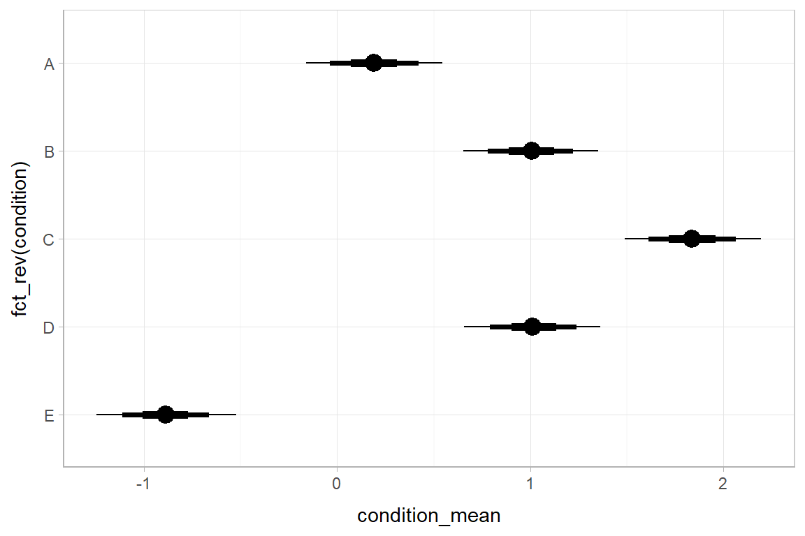
Alternative estimates and intervals: mean, median, mode; qi, hdi
The point_interval family of functions follow the naming scheme [mean|median|mode]_[qi|hdi][h|], and all work in the same way as mean_qi: they take a series of names (or expressions calculated on columns) and summarize those columns with the corresponding point estimate (mean, median, or mode) and interval (qi or hdi). qi yields a quantile interval (a.k.a. equi-tailed interval, central interval, or percentile interval) and hdi yields a highest (posterior) density interval. These can be used in any combination desired. Here is an example showing mean_qi (black) compared to mode_hdi (red):
m %>%
spread_samples(response_sd) %>%
ggplot(aes(x = response_sd)) +
stat_density(aes(y = ..scaled.. * 15), fill = "gray75") +
stat_pointintervalh(aes(y = "mean_qi"), fun.data = mean_qih, .prob = c(.66, .95)) +
stat_pointintervalh(aes(y = "mode_hdi"), fun.data = mode_hdih, .prob = c(.66, .95), color = "red") +
ylab("")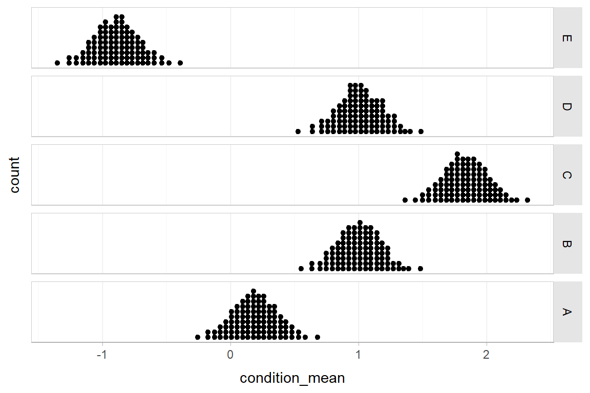
Combining variables with different indices in a single tidy format data frame
spread_samples supports gathering variables that have different indices. It automatically matches up indices with the same name, and duplicates values as necessary to produce one row per all combination of levels of all indices. For example, we might want to calculate the difference between each condition mean and the overall mean. To do that, we can gather samples from the overall mean and all condition means:
m %>%
spread_samples(overall_mean, condition_mean[condition]) %>%
head(10)## # A tibble: 10 x 5
## # Groups: condition [5]
## .chain .iteration overall_mean condition condition_mean
## <int> <int> <dbl> <fctr> <dbl>
## 1 1 1 0.6385530 A -0.1206604
## 2 1 1 0.6385530 B 1.0043807
## 3 1 1 0.6385530 C 1.5011137
## 4 1 1 0.6385530 D 1.1089315
## 5 1 1 0.6385530 E -1.1163084
## 6 1 2 0.4273111 A 0.2778306
## 7 1 2 0.4273111 B 0.7552125
## 8 1 2 0.4273111 C 1.8340128
## 9 1 2 0.4273111 D 0.7040865
## 10 1 2 0.4273111 E -1.1510277(10 rows of 20000)
Within each sample, overall_mean is repeated as necessary to correspond to every index of condition_mean. Thus, the mutate function from dplyr can be used to take the differences over all rows, then we can summarize with mean_qi:
m %>%
spread_samples(overall_mean, condition_mean[condition]) %>%
mutate(condition_offset = condition_mean - overall_mean) %>%
mean_qi(condition_offset)## Warning: package 'bindrcpp' was built under R version 3.4.1## # A tibble: 5 x 5
## # Groups: condition [5]
## condition condition_offset conf.low conf.high .prob
## <fctr> <dbl> <dbl> <dbl> <dbl>
## 1 A -0.4352110 -1.7031101 0.8016735 0.95
## 2 B 0.3754623 -0.8762393 1.6367148 0.95
## 3 C 1.2099543 -0.0063093 2.4719507 0.95
## 4 D 0.3833204 -0.8339862 1.6597211 0.95
## 5 E -1.5236646 -2.8078073 -0.3157583 0.95Posterior predictions
We can use combinations of variables with difference indices to generate predictions from the model. In this case, we can combine the condition means with the residual standard deviation to generate predictive distributions from the model:
m %>%
spread_samples(condition_mean[condition], response_sd) %>%
mutate(y_rep = rnorm(n(), condition_mean, response_sd)) %>%
ggplot(aes(x = y_rep)) +
stat_density() +
facet_grid(condition ~ ., switch = "y")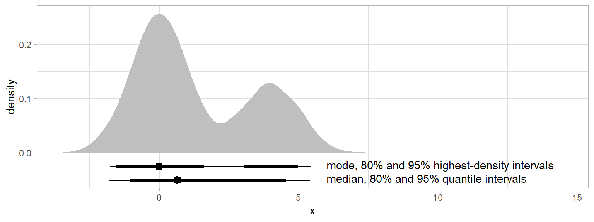
And even summarize these as predictive intervals and compare them to the data:
m %>%
spread_samples(condition_mean[condition], response_sd) %>%
mutate(y_rep = rnorm(n(), condition_mean, response_sd)) %>%
mean_qi(y_rep, .prob = c(.95, .8, .5)) %>%
ggplot(aes(y = fct_rev(condition), x = y_rep)) +
geom_intervalh() + #auto-sets aes(xmin = conf.low, xmax = conf.high, color = fct_rev(ordered(.prob)))
geom_point(aes(x = response), data = ABC) +
scale_color_brewer()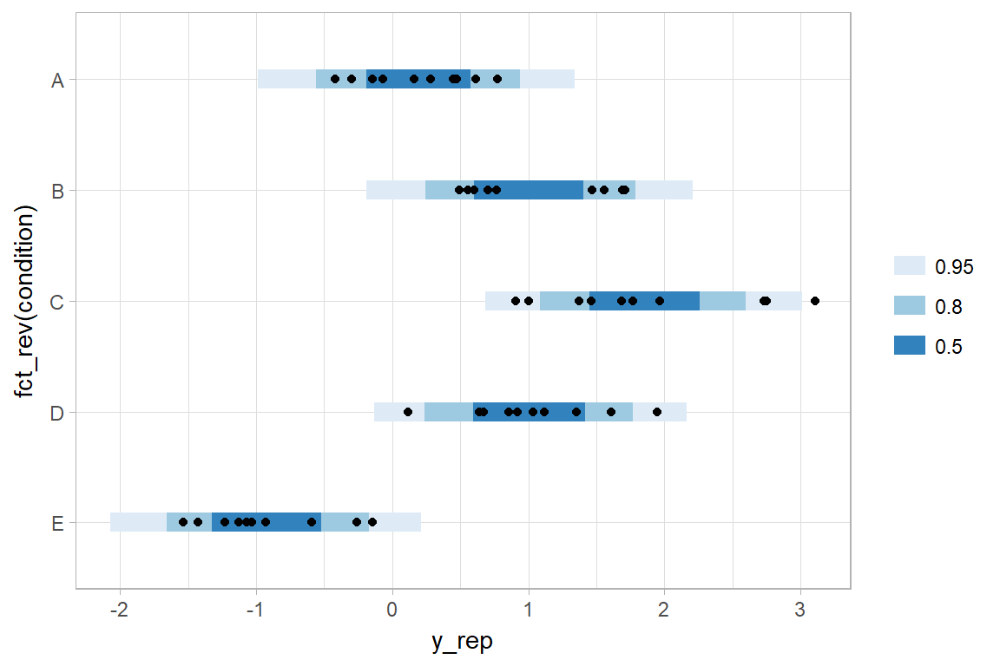
If this model is well-calibrated, about 95% of the data should be within the outer intervals, 80% in the next-smallest intervals, and 50% in the smallest intervals.
Posterior predictions with paramter estimates
Altogether, data, posterior predictions, and estimates of the means:
samples = m %>%
spread_samples(condition_mean[condition], response_sd)
reps = samples %>%
mutate(y_rep = rnorm(n(), condition_mean, response_sd)) %>%
mean_qi(y_rep, .prob = c(.95, .8, .5))
parameters = samples %>%
mean_qi(condition_mean, .prob = c(.95, .66))
ABC %>%
ggplot(aes(y = condition)) +
geom_intervalh(aes(x = y_rep), data = reps) +
geom_pointintervalh(aes(x = condition_mean), position = position_nudge(y = -0.2), data = parameters) +
geom_point(aes(x = response)) +
scale_color_brewer()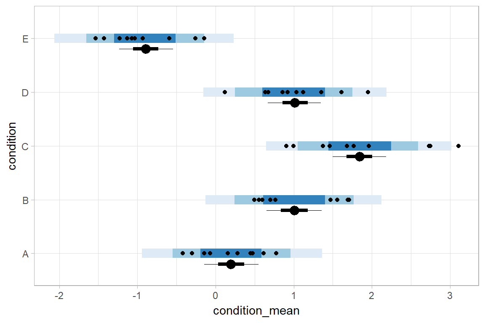
Comparing levels of a factor
If we wish compare the values of condition_mean across conditions, compare_levels facilitates comparisons of the value of some variable across levels of a factor. By default it computes all pairwise differences, though this can be changed using the comparison = parameter:
#N.B. the syntax for compare_levels is experimental and may change
m %>%
spread_samples(condition_mean[condition]) %>%
compare_levels(condition_mean, by = condition) %>%
ggplot(aes(y = condition, x = condition_mean)) +
geom_halfeyeh()## Picking joint bandwidth of 0.042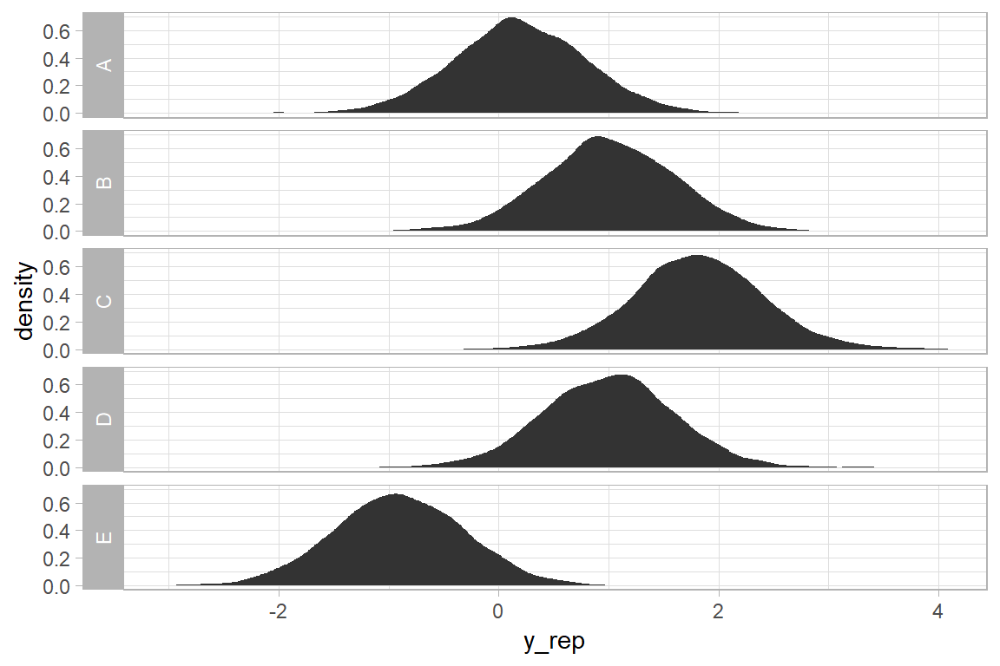
Gathering all parameter names into a single column: gather_samples and gather_terms
We might also prefer all parameter names to be in a single column (long-format) instead of as column names. There are three methods for obtaining long-format data frames with tidybayes, whose use depends on where and how in the data processing chain you might want to transform into long-format: gather_samples, gather_terms, and as_sample_tibble.
gather_samples is the counterpart to spread_samples, except it puts all parameter names into a term column and samples into an estimate column (for compatibility with broom::tidy):
m %>%
gather_samples(overall_mean, condition_mean[condition]) %>%
mean_qi()## # A tibble: 6 x 6
## # Groups: term, condition [6]
## term condition estimate conf.low conf.high .prob
## <chr> <fctr> <dbl> <dbl> <dbl> <dbl>
## 1 condition_mean A 0.1968434 -0.1427452 0.5482592 0.95
## 2 condition_mean B 1.0075166 0.6539753 1.3588999 0.95
## 3 condition_mean C 1.8420086 1.4953866 2.1836275 0.95
## 4 condition_mean D 1.0153748 0.6710544 1.3494475 0.95
## 5 condition_mean E -0.8916102 -1.2320089 -0.5412994 0.95
## 6 overall_mean <NA> 0.6320543 -0.5883171 1.8716527 0.95Note that condition = NA for the overall_mean row, because it does not have an index with that name in the specification passed to gather_samples.
While this works well if we do not need to perform computations that involve multiple columns, the wide format returned by spread_samples is very useful for computations that involve multiple columns names, such as the calculation of the condition_offset above. If we want to make intermediate computations on the format returned by spread_samples and then gather parameters into one column, we can use gather_terms, which will gather all non-grouped terms that do not start with ".":
m %>%
spread_samples(overall_mean, condition_mean[condition]) %>%
mutate(condition_offset = condition_mean - overall_mean) %>%
gather_terms() %>%
mean_qi()## # A tibble: 15 x 6
## # Groups: condition, term [15]
## condition term estimate conf.low conf.high .prob
## <fctr> <chr> <dbl> <dbl> <dbl> <dbl>
## 1 A condition_mean 0.1968434 -0.1427452 0.5482592 0.95
## 2 A condition_offset -0.4352110 -1.7031101 0.8016735 0.95
## 3 A overall_mean 0.6320543 -0.5883171 1.8716527 0.95
## 4 B condition_mean 1.0075166 0.6539753 1.3588999 0.95
## 5 B condition_offset 0.3754623 -0.8762393 1.6367148 0.95
## 6 B overall_mean 0.6320543 -0.5883171 1.8716527 0.95
## 7 C condition_mean 1.8420086 1.4953866 2.1836275 0.95
## 8 C condition_offset 1.2099543 -0.0063093 2.4719507 0.95
## 9 C overall_mean 0.6320543 -0.5883171 1.8716527 0.95
## 10 D condition_mean 1.0153748 0.6710544 1.3494475 0.95
## 11 D condition_offset 0.3833204 -0.8339862 1.6597211 0.95
## 12 D overall_mean 0.6320543 -0.5883171 1.8716527 0.95
## 13 E condition_mean -0.8916102 -1.2320089 -0.5412994 0.95
## 14 E condition_offset -1.5236646 -2.8078073 -0.3157583 0.95
## 15 E overall_mean 0.6320543 -0.5883171 1.8716527 0.95Note how overall_mean is now repeated here for each condition, because we have performed the gather after spreading parameters across columns.
Finally, if we want raw parameter names as columns names instead of having indices split out as their own column names, we can use as_sample_tibble. Generally speaking this should not be necessary, but is provided as a common method for generating data frames from many types of Bayesian models, and is used internally by gather_samples and spread_samples:
m %>%
as_sample_tibble() %>%
head(10)## # A tibble: 10 x 16
## .chain .iteration overall_mean `condition_zoffset[1]` `condition_zoffset[2]`
## <int> <int> <dbl> <dbl> <dbl>
## 1 1 1 0.63855299 -0.67696916 0.3261983
## 2 1 2 0.42731110 -0.15960872 0.3501187
## 3 1 3 0.42759837 -0.38769083 0.7854806
## 4 1 4 0.31554502 -0.07315049 0.7140180
## 5 1 5 0.55830932 -0.23607761 0.6907670
## 6 1 6 0.46840728 -0.19069084 0.6376667
## 7 1 7 0.15342895 -0.44415471 1.6669579
## 8 1 8 0.39314982 0.16952886 0.1772746
## 9 1 9 0.35704260 -0.29151472 0.8836474
## 10 1 10 0.06237028 0.03386501 1.0206227
## # ... with 11 more variables: `condition_zoffset[3]` <dbl>, `condition_zoffset[4]` <dbl>,
## # `condition_zoffset[5]` <dbl>, response_sd <dbl>, condition_mean_sd <dbl>,
## # `condition_mean[1]` <dbl>, `condition_mean[2]` <dbl>, `condition_mean[3]` <dbl>,
## # `condition_mean[4]` <dbl>, `condition_mean[5]` <dbl>, lp__ <dbl>(10 rows of 4000)
Combining as_sample_tibble with gather_terms also allows us to derive similar output to ggmcmc::ggs, if desired:
m %>%
as_sample_tibble() %>%
gather_terms() %>%
head(10)## # A tibble: 10 x 4
## # Groups: term [1]
## .chain .iteration term estimate
## <int> <int> <chr> <dbl>
## 1 1 1 overall_mean 0.63855299
## 2 1 2 overall_mean 0.42731110
## 3 1 3 overall_mean 0.42759837
## 4 1 4 overall_mean 0.31554502
## 5 1 5 overall_mean 0.55830932
## 6 1 6 overall_mean 0.46840728
## 7 1 7 overall_mean 0.15342895
## 8 1 8 overall_mean 0.39314982
## 9 1 9 overall_mean 0.35704260
## 10 1 10 overall_mean 0.06237028(10 rows of 56000)
But again, this approach does not handle parameter indices for us automatically, so using spread_samples and gather_samples is generally recommended unless you do not have parameter indices to worry about.
Selecting parameters using regular expressions
You can use regular expressions in the specifications passed to spread_samples and gather_samples to match multiple columns by passing regex = TRUE. Our example fit contains parameters named condition_mean[i] and condition_zoffset[i]. We could extract both using a single regular expression:
m %>%
spread_samples(`condition_.*`[condition], regex = TRUE) %>%
head(10)## # A tibble: 10 x 5
## # Groups: condition [5]
## .chain .iteration condition condition_mean condition_zoffset
## <int> <int> <fctr> <dbl> <dbl>
## 1 1 1 A -0.1206604 -0.6769692
## 2 1 1 B 1.0043807 0.3261983
## 3 1 1 C 1.5011137 0.7691211
## 4 1 1 D 1.1089315 0.4194232
## 5 1 1 E -1.1163084 -1.5647605
## 6 1 2 A 0.2778306 -0.1596087
## 7 1 2 B 0.7552125 0.3501187
## 8 1 2 C 1.8340128 1.5020142
## 9 1 2 D 0.7040865 0.2955285
## 10 1 2 E -1.1510277 -1.6852807(10 rows of 20000)
This result is equivalent in this case to spread_samples(c(condition_mean, condition_zoffset)[condition]), but does not require us to list each parameter explicitly—this can be useful, for example, in models with naming schemes like b_[some name] for coefficients.
Compatibility with other packages
Compatibility of point_interval with broom::tidy and dotwhisker::dwplot: A model comparison example
Because mean_qi and the point_interval family of functions use a similar naming scheme to that of broom::tidy, it is easy to compare results against models supported by broom::tidy. For example, let’s compare our model’s estimates of conditional means against an ordinary least squares (OLS) regression:
m_linear = lm(response ~ condition, data = ABC)Combining lsmeans::lsmeans with broom::tidy, we can generate tidy-format estimates of conditional means from the above model:
linear_estimates = m_linear %>%
lsmeans(~ condition) %>%
tidy() %>%
mutate(model = "OLS")
linear_estimates## condition estimate std.error df conf.low conf.high model
## 1 A 0.1815842 0.173236 45 -0.1673310 0.5304993 OLS
## 2 B 1.0142144 0.173236 45 0.6652993 1.3631296 OLS
## 3 C 1.8745839 0.173236 45 1.5256687 2.2234990 OLS
## 4 D 1.0271794 0.173236 45 0.6782642 1.3760946 OLS
## 5 E -0.9352260 0.173236 45 -1.2841411 -0.5863108 OLSWe can derive corresponding estimates from our model:
bayes_estimates = m %>%
spread_samples(condition_mean[condition]) %>%
mean_qi(estimate = condition_mean) %>%
mutate(model = "Bayes")
bayes_estimates## # A tibble: 5 x 6
## # Groups: condition [5]
## condition estimate conf.low conf.high .prob model
## <fctr> <dbl> <dbl> <dbl> <dbl> <chr>
## 1 A 0.1968434 -0.1427452 0.5482592 0.95 Bayes
## 2 B 1.0075166 0.6539753 1.3588999 0.95 Bayes
## 3 C 1.8420086 1.4953866 2.1836275 0.95 Bayes
## 4 D 1.0153748 0.6710544 1.3494475 0.95 Bayes
## 5 E -0.8916102 -1.2320089 -0.5412994 0.95 BayesBecause the point_interval functions use the same column names for conf.low and conf.high as broom::tidy does, the column names for the columns we need to make the comparison (condition, estimate, conf.low, and conf.high) all line up easily. This makes it simple to combine the two tidy data frame together using bind_rows, and plot them:
bind_rows(linear_estimates, bayes_estimates) %>%
mutate(condition = fct_rev(condition)) %>%
ggplot(aes(y = condition, x = estimate, xmin = conf.low, xmax = conf.high, color = model)) +
geom_pointrangeh(position = position_dodgev(height = .3))
Comptability with tidy also gives compatibility with dotwhisker::dwplot:
bind_rows(linear_estimates, bayes_estimates) %>%
rename(term = condition) %>%
dotwhisker::dwplot()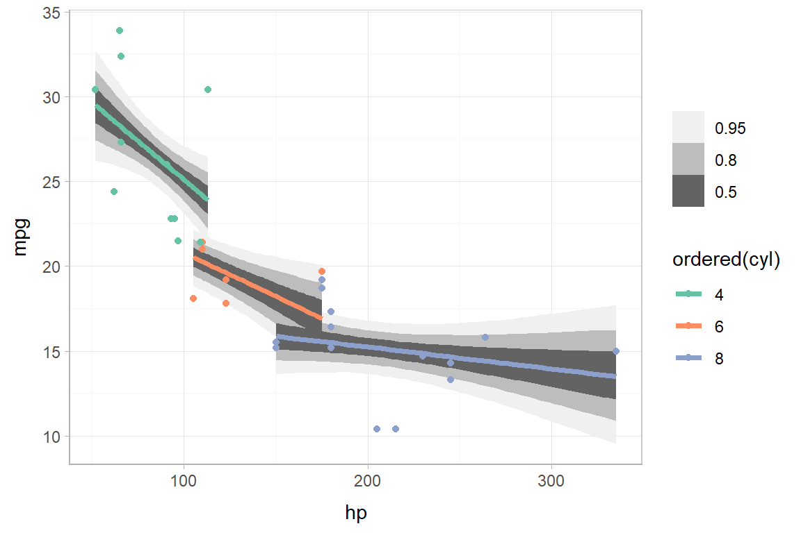
Observe the shrinkage towards the overall mean in the Bayesian model compared to the OLS model.
Compatibility with bayesplot and other non-tidy packages using unspread_samples and ungather_samples
Function from other packages might expect samples in the form of a data frame or matrix with parameters as columns and samples as rows. That is the format returned by as_sample_tibble, but not by gather_samples or spread_samples, which split indices from parameters out into columns.
It may be desirable to use the spread_samples or gather_samples functions to transform your samples in some way, and then convert them back into the sample \(\times\) parameter format to pass them into functions from bayesplot or other packages like it. The unspread_samples and ungather_samples functions invert spread_samples and gather_samples to return a data frame with parameter names that include indices in them as columns and samples as rows.
As an example, let’s re-do the previous example of compare_levels, but use bayesplot::mcmc_hist to plot the results instead of geom_eyeh. First, the result of compare_levels looks like this:
m %>%
spread_samples(condition_mean[condition]) %>%
compare_levels(condition_mean, by = condition) %>%
head(10)## # A tibble: 10 x 4
## .chain .iteration condition condition_mean
## <int> <int> <fctr> <dbl>
## 1 1 1 B - A 1.125041065
## 2 1 2 B - A 0.477381889
## 3 1 3 B - A 1.270099556
## 4 1 4 B - A 0.502015079
## 5 1 5 B - A 0.693417640
## 6 1 6 B - A 0.565305796
## 7 1 7 B - A 1.285095462
## 8 1 8 B - A 0.008256201
## 9 1 9 B - A 1.100684522
## 10 1 10 B - A 0.919831536(10 rows of 40000)
To get a version we can pass to mcmc_hist, all we need to do is invert the spread_samples call we started with:
m %>%
spread_samples(condition_mean[condition]) %>%
compare_levels(condition_mean, by = condition) %>%
unspread_samples(condition_mean[condition]) %>%
head(10)## # A tibble: 10 x 12
## .chain .iteration `condition_mean[B - A]` `condition_mean[C - A]` `condition_mean[C - B]`
## <int> <int> <dbl> <dbl> <dbl>
## 1 1 1 1.125041065 1.621774 0.4967329
## 2 1 2 0.477381889 1.556182 1.0788003
## 3 1 3 1.270099556 2.060137 0.7900378
## 4 1 4 0.502015079 1.466767 0.9647523
## 5 1 5 0.693417640 1.852201 1.1587830
## 6 1 6 0.565305796 1.669140 1.1038344
## 7 1 7 1.285095462 1.597743 0.3126478
## 8 1 8 0.008256201 1.185747 1.1774911
## 9 1 9 1.100684522 2.001202 0.9005175
## 10 1 10 0.919831536 1.692645 0.7728133
## # ... with 7 more variables: `condition_mean[D - A]` <dbl>, `condition_mean[D - B]` <dbl>,
## # `condition_mean[D - C]` <dbl>, `condition_mean[E - A]` <dbl>, `condition_mean[E - B]` <dbl>,
## # `condition_mean[E - C]` <dbl>, `condition_mean[E - D]` <dbl>(10 rows of 4000)
We can pass that into bayesplot::mcmc_areas directly. The drop_indices = TRUE parameter to unspread_samples indicates that .chain and .iteration should not be included in the output:
m %>%
spread_samples(condition_mean[condition]) %>%
compare_levels(condition_mean, by = condition) %>%
unspread_samples(condition_mean[condition], drop_indices = TRUE) %>%
mcmc_areas()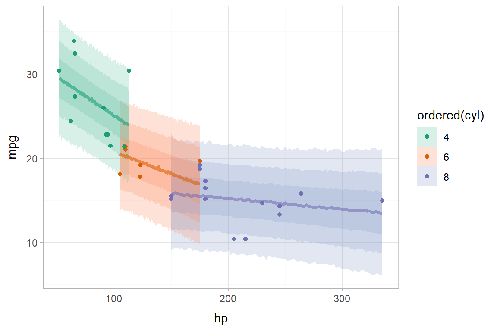
If you are instead working with tidy samples generated by gather_samples or gather_terms, the ungather_samples function will transform those samples into the sample \(\times\) parameter format. It has the same syntax as unspread_samples.